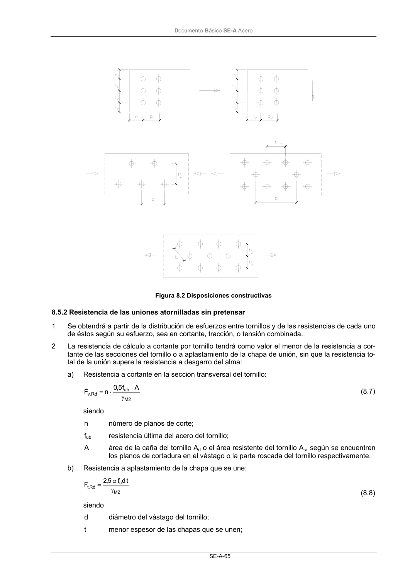
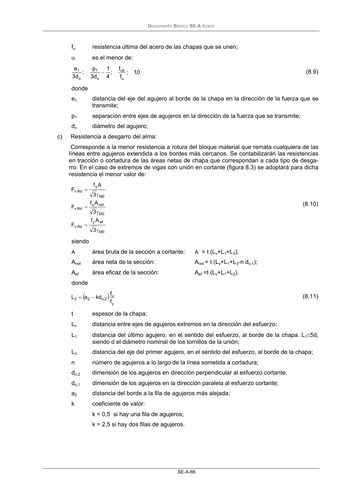
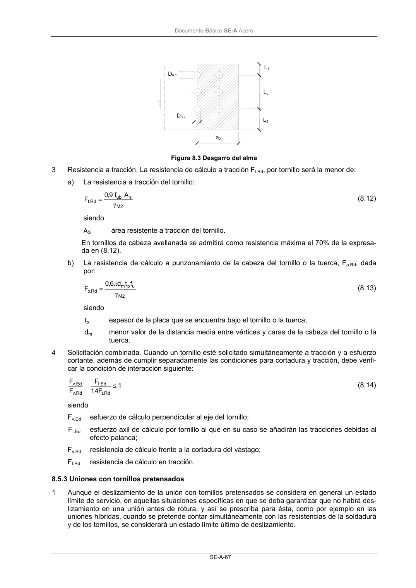

DB-SE-A · 8.5.2 Resistencia de las uniones atornilladas sin pretensar · versión 2007-10-23 · capa oficial
Formatos: JSON compacto · Markdown · PDF fuente
Ámbito del documento · texto del ámbito · documento y tablas
ID técnico a0112 · PDF pág. 67-69 · jerarquía no validada por persona · contrastado con el literal de la página 67 (candidato tipográfico); no validado por persona · padre: a0110
8.5.2 Resistencia de las uniones atornilladas sin pretensar 1 Se obtendrá a partir de la distribución de esfuerzos entre tornillos y de las resistencias de cada uno de éstos según su esfuerzo, sea en cortante, tracción, o tensión combinada. 2 La resistencia de cálculo a cortante por tornillo tendrá como valor el menor de la resistencia a cor- tante de las secciones del tornillo o a aplastamiento de la chapa de unión, sin que la resistencia to- tal de la unión supere la resistencia a desgarro del alma: a) Resistencia a cortante en la sección transversal del tornillo: 2 M ub Rd . v A f 5,0 n F γ ⋅ ⋅ = (8.7) siendo n número de planos de corte; fub resistencia última del acero del tornillo; A área de la caña del tornillo Ad o el área resistente del tornillo As, según se encuentren los planos de cortadura en el vástago o la parte roscada del tornillo respectivamente. b) Resistencia a aplastamiento de la chapa que se une: 2 M u Rd .t t d f 5,2 F γ α = (8.8) siendo d diámetro del vástago del tornillo; t menor espesor de las chapas que se unen; DocumentoBásico SE-A Acero SE-A-66 fu resistencia última del acero de las chapas que se unen; α es el menor de: 0,1 ; f f ; 4 1 d 3 p ; d 3 e u ub o 1 o 1 − (8.9) donde e1 distancia del eje del agujero al borde de la chapa en la dirección de la fuerza que se transmite; p1 separación entre ejes de agujeros en la dirección de la fuerza que se transmite; do diámetro del agujero; c) Resistencia a desgarro del alma: Corresponde a la menor resistencia a rotura del bloque material que remata cualquiera de las líneas entre agujeros extendida a los bordes más cercanos. Se contabilizarán las resistencias en tracción o cortadura de las áreas netas de chapa que correspondan a cada tipo de desga- rro. En el caso de extremos de vigas con unión en cortante (figura 8.3) se adoptará para dicha resistencia el menor valor de: 0 M ef y Rd .v 2 M net u Rd .v 0 M y Rd .v 3 A f F 3 A f F 3 A f F γ = γ = γ = (8.10) siendo A área bruta de la sección a cortante: A = t (Lv+L1+L3); Anet área neta de la sección: Anet = t (Lv+L1+L3-n do,1); Aef área eficaz de la sección: Aef =t (Lv+L1+L2). donde ( ) y u 2 , o 2 2 f f kd a L − = (8.11) t espesor de la chapa; Lv distancia entre ejes de agujeros extremos en la dirección del esfuerzo; L1 distancia del último agujero, en el sentido del esfuerzo, al borde de la chapa. L1≤5d, siendo d el diámetro nominal de los tornillos de la unión; L3 distancia del eje del primer agujero, en el sentido del esfuerzo, al borde de la chapa; n número de agujeros a lo largo de la línea sometida a cortadura; do,2 dimensión de los agujeros en dirección perpendicular al esfuerzo cortante; do,1 dimensión de los agujeros en la dirección paralela al esfuerzo cortante; a2 distancia del borde a la fila de agujeros más alejada; k coeficiente de valor: k = 0,5 si hay una fila de agujeros; k = 2,5 si hay dos filas de agujeros. DocumentoBásico SE-A Acero SE-A-67 Figura 8.3 Desgarro del alma 3 Resistencia a tracción. La resistencia de cálculo a tracción Ft.Rd, por tornillo será la menor de: a) La resistencia a tracción del tornillo: 2 M s ub Rd .t A f 9,0 F γ = (8.12) siendo AS área resistente a tracción del tornillo. En tornillos de cabeza avellanada se admitirá como resistencia máxima el 70% de la expresa- da en (8.12). b) La resistencia de cálculo a punzonamiento de la cabeza del tornillo o la tuerca, Fp.Rd, dada por: 2 M u p m Rd . p f t d 6,0 F γ π = (8.13) siendo tp espesor de la placa que se encuentra bajo el tornillo o la tuerca; dm menor valor de la distancia media entre vértices y caras de la cabeza del tornillo o la tuerca. 4 Solicitación combinada. Cuando un tornillo esté solicitado simultáneamente a tracción y a esfuerzo cortante, además de cumplir separadamente las condiciones para cortadura y tracción, debe verifi- car la condición de interacción siguiente: 1 F 4 ,1 F F F Rd .t Ed .t Rd . v Ed .v ≤ + (8.14) siendo Fv.Ed esfuerzo de cálculo perpendicular al eje del tornillo; Ft.Ed esfuerzo axil de cálculo por tornillo al que en su caso se añadirán las tracciones debidas al efecto palanca; Fv.Rd resistencia de cálculo frente a la cortadura del vástago; Ft.Rd resistencia de cálculo en tracción.



PDF fuente redistribuible: copia fiel enlazada en esta página (SHA256 verificado).